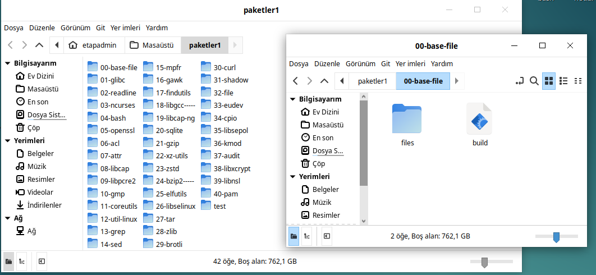

base-file¶
Linux sistemimiz için öncelikle temel ayarlamalar ve gerekli dosya-dizin yapıları oluşturulmalıdır. Bu yapıyı hazırladıktan sonra, diğer tüm paketleri ve sistemi bu temel üzerine inşa edeceğiz.
Aslında bir Linux sisteminin en temel paketi glibc'dir. Ancak, glibc derlenip yüklenmeden önce, sistem için gerekli temel dizin yapısının hazır olması gerekir. Bu nedenle base-file adında özel bir paket oluşturduk.
base-file Komutları¶
Aşağıdaki komutlarla temel dosya ve dizin yapısını hazırlıyoruz:
display=":$(ls /tmp/.X11-unix/* | sed 's#/tmp/.X11-unix/X##' | head -n 1)" # Açık ekran tespiti
user=$(who | grep '('$display')' | awk '{print $1}') # Ekranı açan kullanıcı tespiti
mkdir -p /home/$user/distro/build # Derleme dizini yoksa oluşturuluyor
mkdir -p /home/$user/distro/rootfs # Sistemin oluşturulacağı dizin yoksa oluşturuluyor
rm -rf /home/$user/distro/build/* # İçeriği temizleniyor
cp -prfv files/* /home/$user/distro/build/ # Ek dosyalar kopyalanıyor
cd /home/$user/distro/build # Derleme dizinine geçiliyor
mkdir -p bin dev etc home lib64 proc root run sbin sys usr var etc/kly tmp tmp/kly/kur \
var/log var/tmp usr/lib64/x86_64-linux-gnu usr/lib64/pkgconfig \
usr/local/{bin,etc,games,include,lib,sbin,share,src}
ln -s lib64 lib
cd var && ln -s ../run run && cd -
cd usr && ln -s lib64 lib && cd -
cd usr/lib64/x86_64-linux-gnu && ln -s ../pkgconfig pkgconfig && cd -
bash -c "echo -e \"/bin/sh \n/bin/bash \n/bin/rbash \n/bin/dash\" >> /home/$user/distro/build/etc/shell"
bash -c "echo 'tmpfs /tmp tmpfs rw,nodev,nosuid 0 0' >> /home/$user/distro/build/etc/fstab"
bash -c "echo '127.0.0.1 kly' >> /home/$user/distro/build/etc/hosts"
bash -c "echo 'kly' > /home/$user/distro/build/etc/hostname"
bash -c "echo 'nameserver 8.8.8.8' > /home/$user/distro/build/etc/resolv.conf"
echo root:x:0:0:root:/root:/bin/sh > /home/$user/distro/build/etc/passwd
chmod 755 /home/$user/distro/build/etc/passwd
cp -prfv /home/$user/distro/build/* /home/$user/distro/rootfs/
Yukarıdaki işlemleri daha düzenli ve fonksiyonel hale getirmek için aşağıdaki şablon script yapısını kullanacağız.
Şablon Script Yapısı¶
Aşağıda, tüm paketlerde kullanılacak şablon script yapısı örneği verilmiştir:
#!/usr/bin/env bash
version=""
name=""
depends=""
source=""
display=":$(ls /tmp/.X11-unix/* | sed 's#/tmp/.X11-unix/X##' | head -n 1)" # Açık ekran tespiti
user=$(who | grep '('$display')' | awk '{print $1}') # Kullanıcı tespiti
ROOTBUILDDIR="/home/$user/distro/build" # Derleme konumu
BUILDDIR="/home/$user/distro/build/build-${name}-${version}" # Paket derleme dizini
DESTDIR="/home/$user/distro/rootfs" # Yüklenecek dizin
PACKAGEDIR=$(pwd) # Derleme talimatının bulunduğu dizin
SOURCEDIR="/home/$user/distro/build/${name}-${version}" # Kaynak dizini
initsetup(){
mkdir -p $ROOTBUILDDIR
rm -rf $ROOTBUILDDIR/*
cd $ROOTBUILDDIR
wget ${source}
dowloadfile=$(ls | head -1)
filetype=$(file -b --extension $dowloadfile | cut -d'/' -f1)
if [ "${filetype}" == "???" ]; then unzip ${dowloadfile}; else tar -xvf ${dowloadfile}; fi
director=$(find ./* -maxdepth 0 -type d)
directorname=$(basename ${director})
if [ "${directorname}" != "${name}-${version}" ]; then mv $directorname ${name}-${version}; fi
mkdir -p $BUILDDIR && mkdir -p $DESTDIR && cd $BUILDDIR
}
setup(){ # Derleme öncesi kaynak dosyaların hazırlanması }
build(){ # Paketin derlenmesi }
package(){ # Derlenen dosyaların yüklenmesi }
initsetup
setup
build
package
Şablonda Kullanılan Sabit Bilgiler¶
Şablon script içinde geçen bazı sabit değişkenler şunlardır:
ROOTBUILDDIR: /home/$user/distro/build → Derleme dizini
BUILDDIR: /home/$user/distro/build/build-${name}-${version} → Paket derleme dizini
DESTDIR: /home/$user/distro/rootfs → Yükleme dizini
PACKAGEDIR: $(pwd) → Derleme scriptinin bulunduğu dizin
SOURCEDIR: /home/$user/distro/build/${name}-${version} → Kaynak dizin
Bu değişkenler sayesinde uzun dizin yolları yerine sadece kısaltmaları kullanıyoruz. Bu aslında bir çeşit takma ad (alias) kullanımına benzer. Örneğin, kaynak dizinde işlem yapmak için sadece $SOURCEDIR kullanmanız yeterlidir. Bu yapılar tüm paketlerde geçerli olacak.
base-file scriptine benzer şekilde, diğer paketler için de aynı şablon yapısı kullanılacaktır. Böylece her paket için aynı temel adımları tekrar tekrar yazmanıza gerek kalmayacak. Ayrıca, hata olması durumunda ilgili fonksiyon üzerinden doğrudan müdahale ederek kolayca çözüm sağlayabileceksiniz.
Şablon Scripte Uygun base-file Scripti¶
Aşağıda base-file paketine ait tam script örneği verilmiştir:
#!/usr/bin/env bash
version="1.0"
name="base-file"
depends=""
description="sistemin temel yapısı"
source=""
display=":$(ls /tmp/.X11-unix/* | sed 's#/tmp/.X11-unix/X##' | head -n 1)"
user=$(who | grep '('$display')' | awk '{print $1}')
ROOTBUILDDIR="/home/$user/distro/build"
BUILDDIR="/home/$user/distro/build/build-${name}-${version}"
DESTDIR="/home/$user/distro/rootfs"
PACKAGEDIR=$(pwd)
SOURCEDIR="/home/$user/distro/build/${name}-${version}"
initsetup(){
mkdir -p $ROOTBUILDDIR
rm -rf $ROOTBUILDDIR/*
cd $ROOTBUILDDIR
mkdir -p $BUILDDIR && mkdir -p $DESTDIR && cd $BUILDDIR
}
setup(){
cp -prfv $PACKAGEDIR/files/* $BUILDDIR/
}
build(){
echo ""
}
package(){
mkdir -p bin dev etc home lib64 proc root run sbin sys usr var etc/kly \
tmp tmp/kly/kur var/log var/tmp usr/lib64/x86_64-linux-gnu \
usr/lib64/pkgconfig usr/local/{bin,etc,games,include,lib,sbin,share,src}
ln -s lib64 lib
cd var && ln -s ../run run && cd -
cd usr && ln -s lib64 lib && cd -
cd usr/lib64/x86_64-linux-gnu && ln -s ../pkgconfig pkgconfig && cd -
printf "/bin/sh\n/bin/bash\n/bin/rbash\n/bin/dash\n" >> "$BUILDDIR/etc/shell"
echo 'tmpfs /tmp tmpfs rw,nodev,nosuid 0 0' >> "$BUILDDIR/etc/fstab"
echo '127.0.0.1 kly' >> "$BUILDDIR/etc/hosts"
echo 'kly' > "$BUILDDIR/etc/hostname"
echo 'nameserver 8.8.8.8' > "$BUILDDIR/etc/resolv.conf"
echo 'root:x:0:0:root:/root:/bin/sh' > "$BUILDDIR/etc/passwd"
chmod 755 $BUILDDIR/etc/passwd
cp -prfv $BUILDDIR/* $DESTDIR/
}
initsetup
setup
build
package
Not: Yukarıdaki scriptin sorunsuz çalışabilmesi için ek dosyaları indirin. İndirdiğiniz files.tar dosyasını istediğiniz bir konumda base-file adında bir dizin oluşturarak oraya açınız. base-file dizini içine yukarıdaki script kodlarını build adlı bir dosya oluşturup yapıştırın ve kaydedin. base-file dizininde bir terminal açarak aşağıdaki komutları sırasıyla çalıştırın.
chmod 755 build
sudo ./build
Paket Derleme Yöntemi¶
base-file paketi ilk paket olduğu için detaylı anlatıldı. Bundan sonraki paketlerde sadece şablon bir script dosyası verilecek. Eğer paketin ek dosyaları varsa, bunlar files.tar şeklinde sunulacak.
Her paket için istediğiniz bir konumda yeni bir dizin oluşturun. Varsa, ilgili files.tar arşivini dizin içinde açın.
Aşağıda, test amaçlı derlediğim bazı paketler ile base-file için oluşturulan dizin yapısı görülmektedir:


Derleme Scripti Kullanımı¶
Her paket için build adında bir dosya oluşturup, script kodlarını içine yapıştırın ve kaydedin.
Sonrasında, o dizin içinde terminal açarak aşağıdaki komutları çalıştırabilirsiniz:
chmod 755 build
sudo ./build